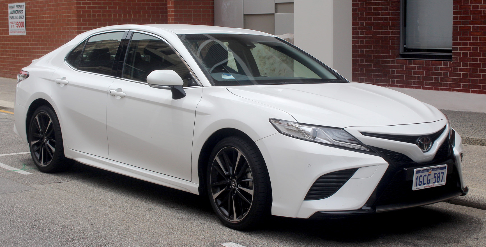
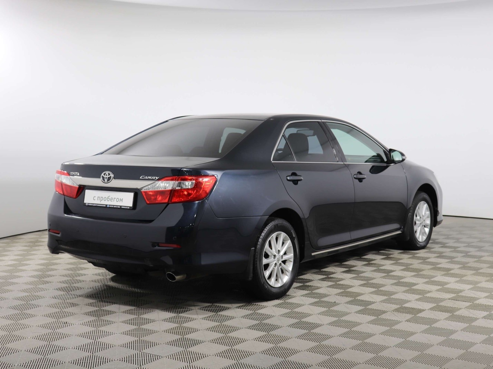
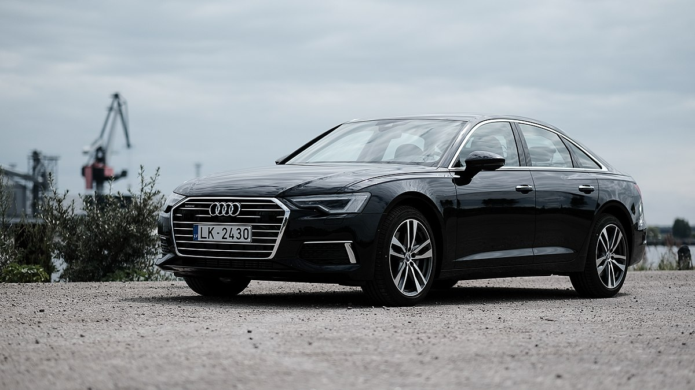
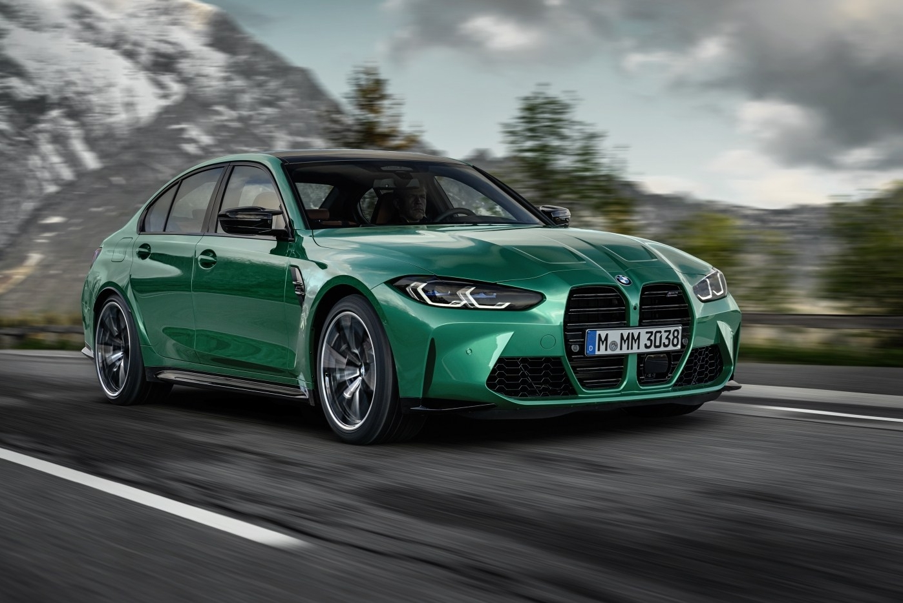

Кузов СЕДАН

Седан (Sedan) – это классический тип кузова легкового автомобиля с четырьмя боковыми дверями и отдельным багажником. В отличие от хэтчбека и лифтбека, багажное отделение седана полностью изолировано от салона, что обеспечивает лучшую шумо- и термоизоляцию. Седаны считаются удобными, комфортными и престижными автомобилями, особенно в бизнес-классе и выше.
Основные характеристики:
- Форма кузова: Вытянутый силуэт, чёткое разделение на три отсека (двигатель, салон, багажник).
- Количество дверей: 4 боковые + крышка багажника.
- Компоновка: Чаще передний или задний привод, иногда полный.
- Багажник: Просторный, но с ограниченным доступом (меньший проём, чем у лифтбека).
- Размеры: От 4,2 до 5,5 метров в длину (зависит от класса).
Классификация седанов:

Toyota Camry

Audi A6
- Компактные (B-класс) – небольшие, экономичные автомобили (Hyundai Accent, Volkswagen Polo, Kia Rio).
- Среднеразмерные (C- и D-класс) – баланс между комфортом и ценой (Toyota Camry, Honda Accord, Volkswagen Passat).
- Бизнес-седаны (E-класс) – премиальные модели с улучшенной отделкой и технологиями (BMW 5-Series, Mercedes-Benz E-Class, Audi A6).
- Представительские (F-класс) – люксовые автомобили для максимального комфорта (Mercedes-Benz S-Class, BMW 7-Series, Lexus LS).
- Спортивные седаны – мощные версии с динамичным характером (BMW M3, Mercedes-AMG C63, Audi RS7).

Mercedes S-Class

BMW M3
Преимущества:
- Комфорт и шумоизоляция – закрытый багажник снижает шум и запахи в салоне.
- Статусность – седаны выглядят более престижно по сравнению с хэтчбеками.
- Хорошая устойчивость на трассе – длинная база делает седаны удобными для дальних поездок.
- Большой выбор моделей – особенно в среднем и премиум-классах.
Недостатки:
- Ограниченный доступ в багажник – сложнее перевозить габаритные предметы.
- Габариты – крупные седаны менее удобны в городе.
- Меньшая универсальность – не так практичны, как хэтчбеки или универсалы.
Седан – это универсальный выбор для тех, кто ценит комфорт, престиж и хорошую управляемость на трассе. Особенно популярен среди семей, бизнесменов и автолюбителей, предпочитающих классические формы автомобиля.